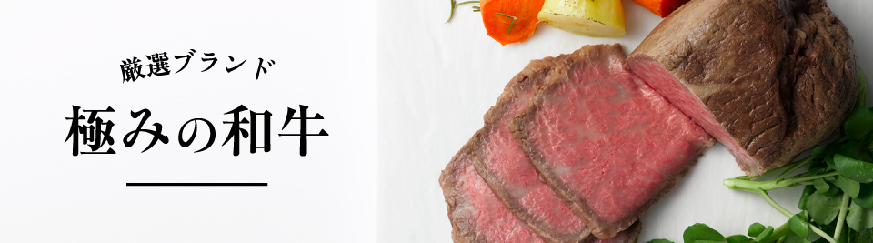
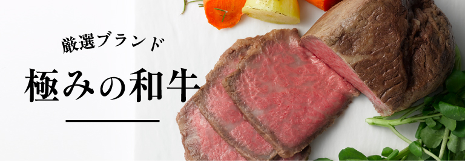
山形牛
明治初期に山形県米沢市に招聘された英国人教師が、そのおいしさに驚嘆したという米沢牛が山形牛のルーツです。昭和37年、当時の県知事により山形県内産肉牛は「山形牛」と命名され全国にその名を広めていきました。良質な脂と肉質、まろやかで深い味わいをご堪能ください。
-
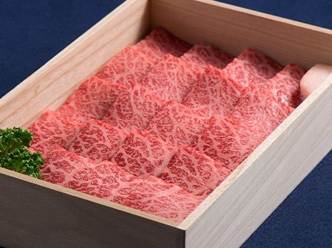
A5ランク、未経産のメス限定
厳選 山形牛特集
3,240円（税込）～
山形牛を知り尽くす地元精肉店から直送。絶品のお肉を「切り立て」でいただく贅沢。
＼送料無料＆ポイント20%還元／
ご注文はこちら -
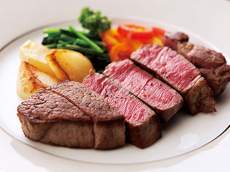
山形牛の旨味をステーキで堪能
山形牛 ステーキ
5,400円（税込）〜～
脂肪の融点が低く、不飽和脂肪酸の割合が高いのが特徴の山形牛。特にステーキでいただきたい部位を集めました。
＼送料無料＆ポイント20%還元／
ご注文はこちら -
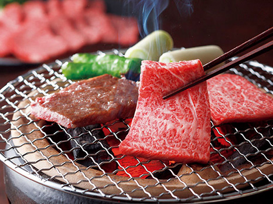
霜降りの山形牛を焼肉で香ばしく
山形牛 焼肉
3,780円（税込）～
きめが細かい霜降りの肉、風味のよさ、脂質のおいしさが揃った山形牛を焼肉で。ジューシィな味わいが楽しめます。
＼送料無料＆ポイント20%還元／
ご注文はこちら -
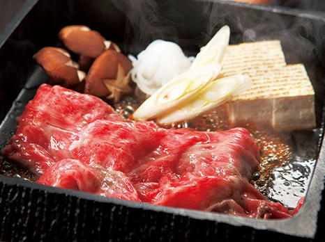
舌の上で、熱々にとろける肉質
山形牛 すき焼
6,480円（税込）～
生産者の愛情がこもった山形牛は、やわらかな肉質が特徴。舌の上でとろける脂質をすき焼でご堪能ください。
＼送料無料＆ポイント20%還元／
ご注文はこちら -
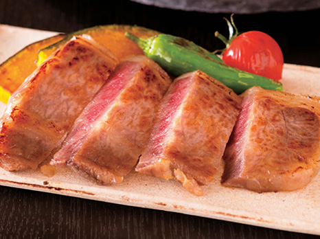
極上サーロインと厳選素材の調和
山形牛 サーロイン酒粕味噌漬
10,800円（税込）
老舗酒造会社『出羽桜酒造』の最高峰「大吟醸酒粕」と、安政7年創業の『紅谷醸造場』の味噌。厳選素材で仕上げました。
＼送料無料＆ポイント20%還元／
ご注文はこちら -
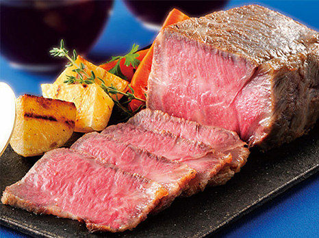
最高の肉質の旨味を閉じ込めた逸品
山形牛 サーロインローストビーフ
10,800円（税込）～
最高の肉質とされるサーロインを贅沢に使用。肉の旨みを逃がさず、濃厚でジューシー。見た目も華やかな一皿に。
＼送料無料＆ポイント20%還元／
ご注文はこちら
米沢牛
米沢・置賜盆地の寒暖差のある気候風土と最上川源流域の豊かな水資源に恵まれて育てられた米沢牛。良質な身の締まりと脂肪ののりの良さが特徴です。
-
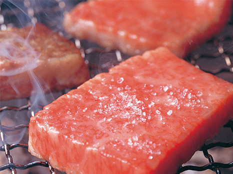
濃厚な旨味は、火を通しすぎずに
米沢牛 焼肉
8,100円（税込）～
良質な穀物を飼料に丹念に育てられた米沢牛は、適度な霜降りと濃厚な旨みが特徴。火を通しすぎずにお召しあがりください。
＼送料無料＆ポイント20%還元／
ご注文はこちら -
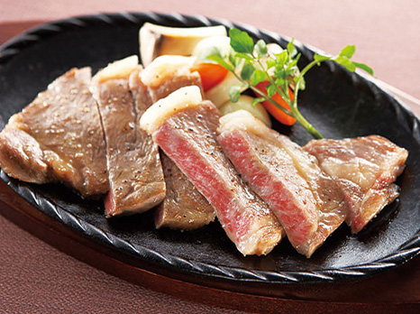
やわらかく、甘みのある赤身を堪能
米沢牛 ステーキ
10,800円（税込）～
細かな霜降り、融点が低い旨みのある脂、甘みがある赤身が特徴の米沢牛。その柔らかさをステーキでご堪能ください。
＼送料無料＆ポイント20%還元／
ご注文はこちら -
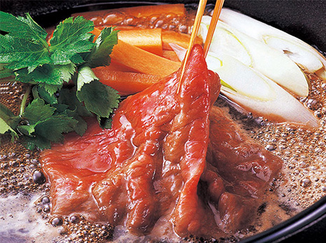
米沢牛の魅力をすき焼で一口に
米沢牛 すき焼
10,800円（税込）～
鍋に溶け出す肉の旨み、湯気と立ち上る芳醇な香り、そしてとろける食感。米沢牛の魅力をすき焼であますことなく堪能。
＼送料無料＆ポイント20%還元／
ご注文はこちら -
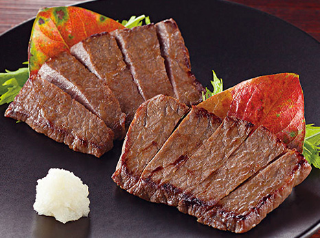
米沢牛を厳選素材で味噌漬けに
米沢牛 味噌粕漬
16,200円（税込）～
細かい霜降りが特徴の米沢牛のモモと肩、ロースを使い味噌粕漬に。芳醇な酒粕、大豆の旨みと米麹の味わいが溶け込みます。
＼送料無料＆ポイント20%還元／
ご注文はこちら
松阪牛
但馬牛をはじめ全国各地から黒毛和種の子牛を集め、三重県松阪市を中心に飼育されます。生産者が愛情を込めて育てる松阪牛の最大の特徴は霜降り。口の中でとろけるまろやかさと甘く上品な香り、ヘルシーで良質な肉質は、海外でも賞賛されています。
-
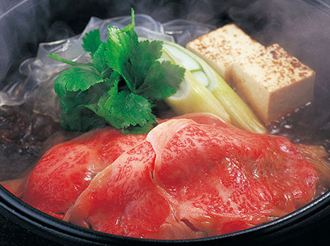
和牛の頂点、その霜降りを堪能
松阪牛 すき焼き
27,000円（税込）
和牛の頂点ともいえる松阪牛をすき焼きで堪能。A4 以上の等級を指定、鮮度重視の冷蔵便でお届けします。
＼送料無料＆ポイント20%還元／
ご注文はこちら
神戸牛
兵庫県内で生まれた但馬牛の血統を持つ黒毛和種から、さらに厳しい条件を満たした牛のみが名のれる神戸牛。日本屈指のブランド和牛です。
-
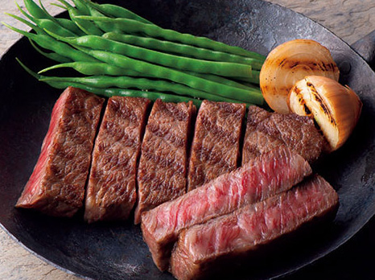
神戸牛のとろけるサシを堪能
神戸牛 ステーキ
32,400円（税込）～
自社牧場で育てた牛を取り扱う、〝牛飼いが経営する肉屋〞太田牧場がお届けする、やわらかくとろけるような肉質の神戸牛。
＼送料無料＆ポイント20%還元／
ご注文はこちら
鳥取和牛
江戸時代から良牛が受け継がれる、「ブランド和牛の故郷」鳥取県。その鳥取でトップクラスの肉牛だけに与えられるブランドが「鳥取和牛オレイン55」。全体の20％程度しか選別されない、希少な肉牛です。